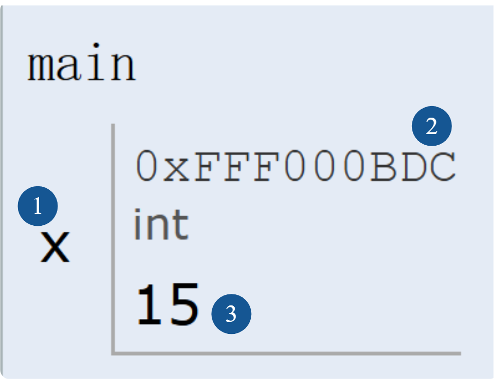

定义变量 → 计算/处理 → 输出结果
字面量、符号常量、数据类型、变量定义与初始化
格式字符、常用用法
地址表列、格式字符、常见陷阱
算术运算符、赋值运算符、数据类型转换
字符输入输出、字符与整数运算、顺序结构程序设计
/* 求圆的周长和面积 */ #include <stdio.h> #define PI 3.14 // 符号常量 int main() { double r, c, s; // 定义变量 scanf("%lf", &r); // 输入半径 c = 2 * PI * r; // 计算周长 s = PI * r * r; // 计算面积 printf("c=%.2f, s=%.2f\n", c, s); return 0; }
3.14、2、#define PIr、c、sdoublescanf、printf*、=%lf、%.2f#include <stdio.h> #define PI 3.14 int main() { double r, c, s; // ① 变量定义 scanf("%lf", &r); // ② 输入 c = 2 * PI * r; // ② 计算 s = PI * r * r; printf("%f", c); // ③ 输出 return 0; }
按定义方式，C 语言的常量分为四类：
源代码里直接写出来的值
如 123、3.14、'A'、"Hello"
用 #define 给值取一个名字
如 #define PI 3.14
批量定义一组命名整数
如 enum { RED, GREEN, BLUE };
用 const 修饰，初始化后不可修改
如 const int n = 10;
| 类型 | 书写形式 | 示例 |
|---|---|---|
| 整型字面量 | 十进制 / 八进制 / 十六进制 | 3、015、0x0D |
| 实型字面量 | 小数形式 / 指数形式 | -16.783、3.4e-5 |
| 字符字面量 | 单引号括起来的单个字符 | 'A'、'$'、'9' |
| 转义字符 | 反斜杠 + 特定字符 | '\n'、'\101' |
| 字符串字面量 | 双引号括起来的一串字符 | "Welcome to C" |
0579 是非法的八进制（含 9）。
#define 符号常量名 字面量
#define PI 3.1415926 #define MAX 100 int main() { double r = 2.0; double area = PI * r * r; // 用 PI 代替 3.1415926 return 0; }
enum Weekday { MON=1, TUE, WED, THU, FRI, SAT, SUN };
· 不写初值时，默认从 0 开始递增
· 可以显式赋初值，后续自动递增
· 相比 #define，有类型，可调试
const double PI = 3.1415926;
· 有类型，参与类型检查
· 初始化后不能修改
· 调试器能看到名字
· 严格说是"只读变量"
#define 或 const 都行；一组相关整数用 enum。
程序运行时，系统为每一个变量分配一个内存单元，并在变量名、内存地址、变量值之间建立一一对应关系。

? 表示未初始化
scanf("%d", &n); 里的 &n，取的就是变量 n 的地址。| 类型 | 关键字 | 典型用途 |
|---|---|---|
| 整型 | int | 存整数，如 123、-45 |
| 单精度实型 | float | 存小数，7~8 位有效数字 |
| 双精度实型 | double | 存小数，15~16 位有效数字 |
| 字符型 | char | 存单个字符，如 'A' |
| 类型 | 类型定义符 | 长度 | 有效值范围 |
|---|---|---|---|
| 字符型 | char | 1 | -128 ~ 127 |
| 短整型 | short | 2 | -32768 ~ 32767 |
| 整型 | int | 4 | 约 -21 亿 ~ 21 亿 |
| 无符号整型 | unsigned int | 4 | 约 0 ~ 42 亿 |
| 长整型 | long | 4 | 约 -21 亿 ~ 21 亿 |
| 单精度实型 | float | 4 | 约 3.4e-38 ~ 3.4e38（7 位有效） |
| 双精度实型 | double | 8 | 约 1.7e-307 ~ 1.7e308（16 位有效） |
student_name
birthday
age
_count
123abc（数字开头）
my name（含空格）
int（关键字）
printf（库函数名）
ANSI C 标准中有 32 个关键字：
auto | break | case | char | const | continue | default | do |
double | else | enum | extern | float | for | goto | if |
int | long | register | return | short | signed | sizeof | static |
struct | switch | typedef | union | unsigned | void | volatile | while |
int、float、return 当变量名使用，编译器会直接报错。
类型定义符 变量名表; int student_num; float score, aver; int n1, n2, total;
类型定义符 变量 = 表达式; long distance = 700000; double area = 9.6e7; int n1 = 123, n2 = 456, total;
int a, b, c = 5; 只给 c 赋了初值，a、b 没有初值；int a = b = c = 5; 是非法写法，b、c 未定义。
变量名 = 表达式;
int a, b, c; a = b = c = 5; // 从右往左：c=5, b=5, a=5 a = b = (c = 5); // 等价于上面的单步 // (a = b) = c = 5; // 错误！左边必须是变量
printf("格式控制字符串", 输出列表);
% 开头，如 %d（整数）、%f（实数）、%c（字符）、%s（字符串）\n 表示换行#include <stdio.h>。
| 格式符 | 含义 | 示例与输出 |
|---|---|---|
| %d | 十进制整数 | int a=567; printf("%d",a); → 567 |
| %f | 小数形式浮点数 | printf("%f",3.14); → 3.140000 |
| %c | 单个字符 | int a=65; printf("%c",a); → A |
| %s | 字符串 | printf("%s","ABC"); → ABC |
| %x | 十六进制无符号整数 | int a=255; printf("%x",a); → ff |
| %o | 八进制无符号整数 | int a=65; printf("%o",a); → 101 |
| %e | 指数形式浮点数 | printf("%e",567.789); → 5.677890e+002 |
#include <stdio.h> #define PI 3.14 int main() { double r = 2.0; // 半径直接赋值 double c, s; c = 2 * PI * r; // 计算周长 s = PI * r * r; // 计算面积 printf("c = %.2f\n", c); printf("s = %.2f\n", s); return 0; }
double 变量定义#define 符号常量* 乘法运算printf("%.2f") 输出2位小数位数printf("%f") 默认输出6位小数位数
scanf("格式控制字符串", 地址表列);
&变量名（&取地址符，&不能省略）int n1, n2; scanf("%d", &n1); scanf("%d", &n2);
| 格式字符 | 说明 |
|---|---|
| %d | 输入十进制整数 |
| %u | 输入无符号整数 |
| %o | 输入八进制整数（非负数） |
| %x | 输入十六进制整数（非负数） |
| %f、%e | 输入实型数据，double 类型使用 %lf、%le |
| %c | 输入单个字符 |
| %s | 输入字符串 |
scanf("%2d", &a); 输入2位整数scanf("%.1f", &x);错误！输入时不能指定小数位数
| 写法 | 输入示例 | 结果 |
|---|---|---|
scanf("%d,%d", &a, &b); | 3,4 | a=3, b=4 |
scanf("%d:%d:%d", &h,&m,&s); | 12:30:5 | h=12, m=30, s=5 |
scanf("a=%d,b=%d", &a,&b); | a=12,b=24 | a=12, b=24 |
printf 单独输出。printf("a="); scanf("%d",&a);
printf、scanf、%d、%f、%lf 的用法。
#include <stdio.h> int main() { int a, b, sum; scanf("%d %d", &a, &b); sum = a + b; printf("sum=%d\n", sum); return 0; }
运行示例：
输入 12 34 → 输出 sum=46
#include <stdio.h> int main() { double x, y, sum; scanf("%lf %lf", &x, &y); sum = x + y; printf("sum=%.2f\n", sum); return 0; }
运行示例：
输入 3.14 2.86 → 输出 sum=6.00
double 输入必须用 %lfscanf 里变量前必须写 &
下一讲：第 2 章（下）运算符与类型转换